From quarry scan
to machine-ready stone.
The pre-CAM bridge for dimension stone, monuments, and dry-stone masonry — scan, fracture, pack, assemble, and fabricate, all inside Grasshopper.
Real stone is irregular. StonePack makes it fabrication-ready.
It is pre-CAM: it turns survey and design intent into fabrication-ready geometry — blocks, cut plans, nested sheets, stable assemblies — then hands clean geometry to the machine step. Not a CAM controller, not a structural-engineering authority.
Scan-native
Works from GPR, point clouds, and photogrammetry — joint sets and DFN, not idealised CAD solids.
Physics-aware
Packing and masonry respect contact, stability, and rigid-block equilibrium (RBE / CRA).
Shop-floor ready
Terminates in real output: stone-aware cut plans, wire-saw paths, robot / KUKA targets.
One pipeline, end to end.
Almost everything hangs off a single left-to-right spine. The DFN bridge decouples it — joint-set statistics make a fracture network even when the scan mesh is incomplete.
Branches hang off the spine — EdgeMatch & Kintsugi reassembly, Voussoir stereotomy, Trencadís, Sculpt — and the dashed handoff to external CAM (RhinoCAM / KUKA|prc) is deliberately out of scope.
Eighteen subcategories, colour-keyed by stage.
Each Frahan ribbon subcategory carries one accent drawn from its pipeline stage. Colour tells you where you are before you read the label.
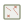
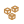
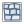
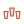
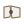
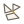
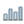
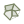
Get the real rock
into Rhino.
Load GPR radargrams, E57 / LAS clouds, and photogrammetry. Estimate normals, reconstruct, then cluster discontinuities into joint sets — live-validated on a 7.86M-point quarry cloud: 4 joint sets, Jv 7.20, Vb 0.352 m³.
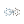
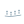
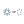
The commercial
heart.
Optimise the cutting lattice to avoid fractures, recover value at finer scales, and nest in 2D or 3D. BlockCutOpt + RecoveryCascade: +21% recovery; 2D NFP-BLF: 53.9% less waste at zero overlap.
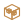
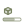
Walls that
actually stand.
Generate courses, pack found stones, and certify equilibrium. RBE is the permissive check; CRA (Kao 2022) rejects self-stressed states RBE accepts — 5/5 parity incl. the H-model. The Λ matcher carves 0.18–0.23 vs greedy 0.59–0.64.
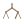
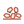
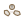
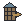
Install, then follow the spine.
Install
In Rhino 8, run _PackageManager and search Frahan StonePack. Install & restart.
Find the tabs
The colour-coded Frahan ribbon appears in Grasshopper — 18 subcategories across the spine.
Wire the spine
Ingest → Discontinuity → Block/Pack → Assemble → Fabricate. Heavy nodes are Run-gated and async.
Export
Bake the packed result and export stone-aware cut plans, G-code, or robot targets.
Hover any component for its [Algorithm] citation. The colour tells you the pipeline stage; [RelatedComponent] edges point to what comes next.